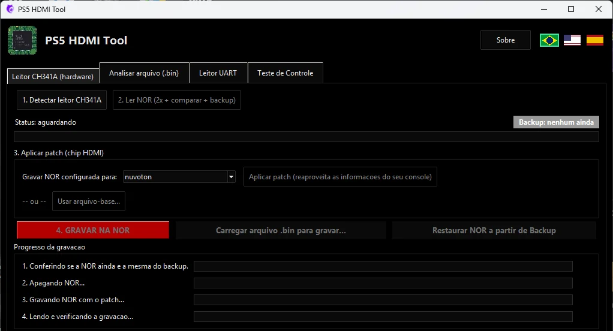

O Realtek RTD2175P sai da placa
Antes de tudo, faça o backup da NOR. Depois remova o CI HDMI original e limpe os pads. É aqui que o reparo costumava travar: a peça nova sai por R$ 1.700.

Lê, faz backup e converte a NOR do PS5 Slim pelo leitor CH341A.
A Interposer Tech MeoW coloca o Nuvoton/Panasonic MN864739 na placa que exige o Realtek RTD2175P. Flex transparente, regulador de 1,8 V já soldado e nenhum fio na placa. A NOR você converte de graça com o nosso programa.

Modelo 3D feito do desenho real da peça. Arraste para girar e ver as duas faces.
Algumas placas do PS5 Slim saem de fábrica com o CI HDMI Realtek RTD2175P. Quando ele dá defeito, o console fica sem vídeo e a peça de reposição pesa demais no orçamento.
Com a mão de obra, o reparo com o Realtek chega perto de R$ 3.000 para o cliente, e muita gente desiste. A interposer é o que permite usar o chip mais barato nessa placa. Valores de referência: mudam conforme o mercado.

E o Realtek ainda costuma chegar assim: cortado de outra placa.
Role a página e acompanhe a troca do CI HDMI na placa. O modelo 3D segue fotos da placa e o desenho real da interposer.
Antes de tudo, faça o backup da NOR. Depois remova o CI HDMI original e limpe os pads. É aqui que o reparo costumava travar: a peça nova sai por R$ 1.700.
O flex transparente deixa ver os pads da placa por baixo: você alinha olhando, sem adivinhar. A face de baixo tem a pinagem do RTD2175P, e os furinhos permitem soldar por capilaridade com o ferro.

O chip Nuvoton ou Panasonic, de R$ 80 em média, é soldado na face de cima. A seta e o triângulo da serigrafia mostram o sentido e o pino 1.

O PMIC do Realtek, o quadradinho ao lado do chip, libera 3,3 V e 0,9 V. O Nuvoton usa 0,9 V e 1,8 V. A interposer pega os 3,3 V em um pino do Realtek e leva ao pino 1 do regulador U1, já soldado na peça. O pino 2 é o GND, o pino 3 (EN) recebe os 0,9 V, e a saída de 1,8 V alimenta o chip novo. Sem puxar fio do PMIC do CXD e sem sobrecarregar esse circuito.
A placa só conversa com o chip que a NOR manda. O programa, grátis, altera a NOR pelo leitor CH341A para o PS5 reconhecer o chip novo. Grave, ligue e o vídeo volta.

Uma placa adaptadora flexível feita para simplificar o reparo de bancada: o técnico solda a peça na placa, solda o chip em cima e pronto.
Dá para ver o outro lado durante o encaixe. Alinhar os pads da interposer com os da placa fica muito mais fácil.
O U1 é um TI TLV71318, em SOT-23-5. Aproveita os 3,3 V que já existem no ponto do Realtek e entrega os 1,8 V do MN864739.
O 1,8 V não sai de outro ponto da placa. Uma sobrecarga no setor de vídeo fica contida na própria peça.
O pino EN do regulador vai na trilha de 0,9 V: o 1,8 V só sobe quando o 0,9 V já está lá.
Os capacitores C1 a C7 já vêm na peça. É soldar e seguir.
Embaixo, a pinagem do Realtek RTD2175P. Em cima, a do Nuvoton/Panasonic MN864739. Sem remapear trilha por trilha.
Triângulo nas duas faces e seta para o chip novo, para reduzir o risco de montar invertido.

As três formas de devolver o vídeo a uma placa que exige o RTD2175P.
| O que muda | Interposer Tech MeoW | Interposer com fio | Realtek novo |
|---|---|---|---|
| CI usado | MN864739 | MN864739 | RTD2175P |
| Custo do CI | R$ 80 em média | R$ 80 em média | Cerca de R$ 1.700 |
| Fio na placa | Não | Sim | Não |
| De onde vem o 1,8 V | Regulador U1, na própria peça | Outro ponto da placa, como o PMIC do CXD | Não usa: o Realtek pede 3,3 V |
| Sobrecarga no setor de vídeo | Fica contida na peça | Pode chegar ao ponto de onde o fio sai | Como na placa original |
| Alterar a NOR | Sim, grátis com o PS5 HDMI Tool | Sim | Não precisa |
A interposer resolve a parte física. A parte da NOR é com o nosso programa, gratuito e de código aberto, feito para a bancada.
Antes de gravar em placa de cliente: confira no log se o checksum da conversão saiu como resolvido. Se o programa avisar que não resolveu, use só em placa de bancada.
O resumo do processo. O passo a passo completo, com fotos e a localização do CI HDMI, está no guia.
Com o CH341A, leia a NOR antes de encostar o ferro.
No programa, escolha nuvoton e pré-visualize. Ainda não grave.
Com fluxo e ar quente, tire o chip e limpe os pads.
Pasta de 183 °C, alinhe o pino 1 olhando pelo flex e faça a refusão.
Na face de cima, respeitando a seta da serigrafia.
Lupa ou microscópio e multímetro, antes de energizar.
Grave o arquivo convertido, ligue e teste o vídeo.
 Programador CH341A
Programador CH341A Estação de ar quente
Estação de ar quente Ferro de precisão
Ferro de precisão Fluxo de solda
Fluxo de solda Pasta de solda 183 °C
Pasta de solda 183 °CPara técnicos. Exige experiência em microssoldagem SMD/QFN e em gravação de NOR SPI. Feito sem preparo, pode causar perda total da placa-mãe, e a modificação anula a garantia de fábrica do console.
Venda pelo Mercado Livre e pela Shopee.
Sem cadastro e sem instalação.
É uma placa adaptadora fina que fica entre a placa-mãe e o CI HDMI. A Interposer Tech MeoW solda nos pads do Realtek RTD2175P pela face de baixo e recebe o Nuvoton/Panasonic MN864739 na face de cima.
Olhe a marcação do chip entre a APU e o conector HDMI: precisa estar escrito RTD2175P. Não confie só na posição, principalmente em placa que já passou por retrabalho. O PS5 HDMI Tool também mostra o chip HDMI configurado na NOR.
A peça e o programa foram feitos para placas de PS5 Slim que usam o CI HDMI Realtek RTD2175P.
Sim. A placa que sai de fábrica com Realtek só conversa com o Realtek. O PS5 HDMI Tool altera a NOR pelo leitor CH341A para o console reconhecer o Nuvoton ou Panasonic.
Sim. Os dois são o mesmo MN864739, com as duas marcas no mercado de reposição.
Como referência, o Realtek RTD2175P sai por cerca de R$ 1.700 só a peça, e o MN864739 por cerca de R$ 80 em média. Os valores mudam conforme o mercado. O preço da interposer está nas lojas do Mercado Livre e da Shopee.
Não. O regulador U1, já soldado na peça, aproveita os 3,3 V do ponto do Realtek e entrega os 1,8 V do MN864739.
Leitor CH341A, estação de ar quente, ferro de precisão, fluxo, pasta de solda de baixa temperatura, multímetro e microscópio ou lupa.
Não recomendamos. O serviço é para técnicos com experiência em microssoldagem e gravação de NOR. Feito sem preparo, pode causar perda total da placa-mãe.
Se o console liga normalmente, suspeite primeiro da solda: pino frio, ponte ou chip deslocado. Se trava na tela azul de checagem, confira se o checksum da conversão saiu como resolvido no programa.
Compre a interposer, baixe o programa grátis e feche o reparo. Tem assistência, loja ou canal? Fale com a gente sobre parcerias.